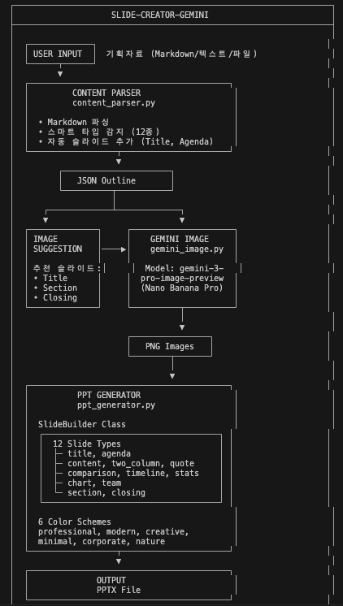
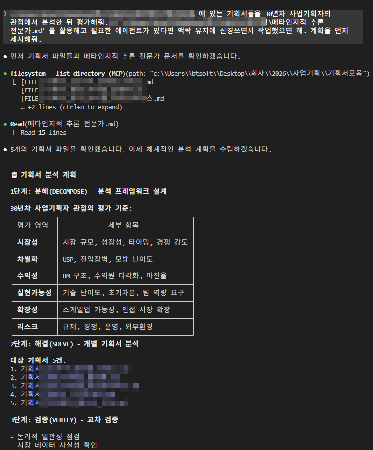
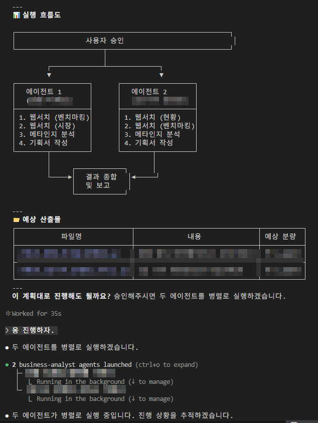

특강: 콘텐츠 자동화
강의 시간: 1시간

Guillermo Rauch, Vercel CEO
오늘 이야기
Vercel CEO 기예르모 라우히가 이런 말을 했어.
"저는 더 이상 자신을 코더라고 생각하지 않습니다."
10살 때부터 코딩에 미쳐 살았고, 전 세계 웹 개발 표준을 만드는 사람이.
왜 '코더'라는 정체성을 버렸을까?
이제 가치를 만드는 방식이 바뀌었기 때문이야.
오늘의 흐름
1. 할당 경제: AI에게 반복 업무를 정교하게 할당하는 시대
↓
2. 콘텐츠 = AI에게 맡기기 딱 좋은 반복 업무
↓
3. 정교한 할당 = 멀티 에이전트 워크플로우
↓
4. 실전: Threads 콘텐츠 자동화 파이프라인
↓
5. 비용 0원 → Antigravity (Google 무료 토큰)
↓
6. 콘텐츠 → 고객 → 제품 → 검증 가능
Part 1: 할당 경제 - AI에게 업무를 할당하는 시대
지식 경제는 끝났어
우리는 '지식 경제'에 살았어.
머릿속에 지식을 쌓고, 그걸 꺼내서 문제를 풀면 돈을 받았어.
"C언어 문법을 안다" = 능력 "엑셀 함수를 안다" = 능력 "디자인 툴을 다룬다" = 능력
근데 기예르모가 이렇게 말해:
"기능(Skill)이 구체적일수록, 기계에게 대체되기 쉽다."
암산을 잘하는 건 훌륭하지만, 계산기가 나온 순간 시장 가치는 0이 됐어.
코딩도 마찬가지야. AI가 더 잘 하는 '특정 기능'이 된 거야.
할당 경제(Allocation Economy)의 도래
그렇다면 인간은 뭘 해야 할까?
할당(Allocation).
과거: "어떻게(How)" 구현하는가 → 기술자가 대우받음 현재: "무엇을(What)", "왜(Why)" → 설계자가 대우받음
이제 모든 지식 근로자는 자본가처럼 사고해야 해.
여기서 자본은 돈이 아니라 AI의 지능과 컴퓨팅 파워야.
너는 이제 매니저야
직접 일하는 실무자가 아니라,
AI 에이전트라는 팀원들을 관리하는 매니저.
"소재 수집은 이 에이전트한테 맡기자." "초안 작성은 스타일 규칙 지키는 에이전트가 하고." "퇴고는 별도 에이전트가 검수하게 하자." "최종 승인은 내가 직접."
이 판단이 네 일이 돼.
과거의 매니저가 사람을 관리했다면,
미래의 인재는 AI 에이전트들의 업무를 설계하고 관리해.
직접 벽돌을 쌓는 게 아니라,
어떤 에이전트에게 어떤 규칙으로 일을 시킬지 결정하는 현장 소장.
근데 이게 콘텐츠랑 무슨 상관?
할당 경제의 핵심은 반복 업무를 AI에게 정교하게 맡기는 것이야.
그러면 어떤 업무가 AI에게 맡기기 좋을까?
AI에게 맡기기 좋은 업무: - 반복적이다 (매일, 매주 같은 패턴) - 규칙이 있다 (톤앤매너, 포맷, 길이) - 입력과 출력이 명확하다 (소재 → 글) - 사람이 최종 검수할 수 있다 AI에게 맡기기 어려운 업무: - 매번 다르다 (창의적 의사결정) - 규칙이 없다 (직관, 취향) - 맥락이 복잡하다 (인간관계, 정치)
콘텐츠 제작은 AI에게 맡기기 딱 좋은 반복 업무야.
매일 뉴스를 모아서, 정해진 톤으로, 정해진 포맷에 맞춰, 글을 쓰는 것.
이게 할당 경제의 가장 실전적인 사례야.
왜 콘텐츠부터 자동화해야 하나?
제품 만들기 전에, 사람부터 모아야 해.
대부분의 순서: 아이디어 → 만든다 → 배포 → "자, 봐!" → 아무도 없음 제대로 된 순서: 사람(Audience) 먼저 → 니즈 발견 → Build → 바로 검증
사람을 모으는 방법:
| 방법 | 비용 | 지속성 | 신뢰도 |
|---|---|---|---|
| 광고 | 높음 (돈) | 돈 끊으면 끝 | 낮음 |
| 콘텐츠 | 낮음 (시간) | 쌓일수록 효과 UP | 높음 |
콘텐츠가 가장 효과적인 고객 획득 수단이야.
Basecamp는 5년간 블로그로 독자를 모아서 출시 첫 주에 유료 가입자를 확보했어.
Buffer도 블로그 독자한테 "이런 도구 쓸 거야?" 물어보고 나서 만들었어.
뉴닉, 퍼블리, 아웃스탠딩도 다 콘텐츠가 먼저, 제품은 나중이었어.
빌더조쉬도 뉴스레터로 팬덤을 모으고, Threads 인플루언서가 된 후, 강의도 팔고 크리에이터가 됐어.
문제: 콘텐츠 만들기 힘들잖아
맞아. 그게 문제야.
- 블로그 글 하나 쓰려면 30분
- 썸네일 만들려면 10분
- SNS 올리려면 포맷 맞춰야 하고
- 매일 하라고? 너무 귀찮아
사람부터 모으라는 건 알겠어.
콘텐츠가 답인 것도 알겠어.
근데 그 콘텐츠를 꾸준히 만들 자신이 없어.
여기서 할당 경제가 들어와.
콘텐츠 제작이라는 반복 업무를 AI에게 정교하게 할당하는 거야.
그게 오늘 이야기할 콘텐츠 자동화야.
Part 2: 멀티 에이전트 워크플로우 - 정교한 할당의 기술
AI한테 글 시켜본 적 있어?
ChatGPT든 Claude든, "블로그 글 써줘" 해봤을 거야.
"AI 사이드프로젝트에 대한 블로그 글 써줘."
결과? 읽을 수는 있는데, 내 글 같진 않아.
- 말투가 내 거랑 다르고
- 너무 교과서적이고
- 경험이 안 담겨 있어
규칙을 알려주면 달라져
블로그 글 써줘. - 반말로 - 문장 15자 이내로 짧게 - 내 경험 기반으로 - "~합니다" 금지
이러면 확실히 나아져.
근데 매번 이걸 복붙해야 해?
매뉴얼 파일을 만들자
블로그 포스팅매뉴얼.md 파일을 하나 만들어:
# 블로그 포스팅 매뉴얼
## 톤앤매너
- 반말 (친구한테 말하듯)
- 문장 15자 이내
- "~합니다" 금지
- 과장 OK ("진짜 대박", "미쳤다")
## 타겟 독자
- AI로 사이드 프로젝트 시작하려는 직장인
- 코딩은 모르지만 뭔가 만들어보고 싶은 사람
## 글 구조
- 제목: 궁금증 유발 (숫자 or 질문형)
- 서론: 공감 → 문제 제기 (3줄 이내)
- 본문: 핵심 3가지 (소제목 필수)
- 결론: 한 줄 요약 + CTA
이걸 GPT에 파일로 첨부해.
한 번 올려두면 매번 복붙 안 해도 돼.
규칙이 많아지면 파일을 나눠
매뉴얼 하나에 다 넣으면 너무 길어져.
역할별로 파일을 나눠서 GPT에 같이 첨부해:
블로그 포스팅매뉴얼.md ← 전체 규칙 (톤, 타겟, 구조) 블로그 레퍼런스.md ← 잘 쓴 글 예시 모음 블로그 키워드전략.md ← 주제/키워드 방향
근데 여기서 문제가 생겨
글을 하나 쓰려면 이런 과정이 필요해:
1. 주제 리서치 2. 규칙 파일 다 읽기 3. 초안 작성 4. 퇴고 (문체 맞나? 분량 맞나?) 5. 최종 정리
이걸 AI한테 한 번에 시키면?
"규칙 파일 다 읽고, 리서치하고, 글 쓰고, 퇴고까지 해줘"
대화가 길어질수록 AI가 앞에서 읽은 걸 잊어버려.
규칙을 대충 읽거나, 중간에 빠뜨려.
해결책: 담당자를 나누자
회사에서도 한 사람한테 다 시키면 퀄리티가 떨어지잖아.
한 명한테: "리서치하고, 기획하고, 글 쓰고, 교정까지 다 해" 역할 분리: 리서처 / 작가 / 편집자
AI도 똑같아. 서브 에이전트라는 걸 쓰면 돼.
서브 에이전트란?
| 개념 | 설명 |
|---|---|
| 마스터 에이전트 | 전체 흐름 관리. 우리랑 대화하는 Claude |
| 서브 에이전트 | 특정 작업만 담당. 매번 새로 시작해서 기억이 깨끗 |
마스터: "블로그 글 하나 써야 해" ↓ 서브 에이전트 1 (리서처): 키워드 조사 → 결과 전달 ↓ 서브 에이전트 2 (작가): 규칙 읽고 → 초안 작성 ↓ 서브 에이전트 3 (편집자): 규칙 대로 퇴고 → 최종본 ↓ 완성
서브 에이전트는 매번 새로 시작해.
그래서 규칙을 처음부터 꼼꼼히 읽어. "이미 읽었으니까 대충" 이 없어.
이 흐름을 멀티 에이전트 워크플로우라고 해.
이걸 명령어로 만들면
매번 "리서치 해줘... 이제 글 써줘... 이제 퇴고해줘..."
이렇게 하나씩 시키기 귀찮잖아.
Claude Code에서는 커스텀 커맨드로 만들 수 있어:
# /write-post - 블로그 글 작성 사용법: /write-post [주제] ## 실행 방법 Task 도구로 서브 에이전트를 호출해. ### 서브 에이전트 1: 리서처 1. 주제 관련 트렌드 조사 2. 키워드 추천 ### 서브 에이전트 2: 작가 1. 공용 매뉴얼 파일 참조 (톤, 구조, 타겟) 2. 리서처 결과 참고 3. 블로그 글 초안 작성 (1500~2000자) ### 서브 에이전트 3: 편집자 1. 공용 매뉴얼 기준으로 검수 2. 톤앤매너 확인 3. 최종본 저장
이제 /write-post "AI 사이드프로젝트" 한 줄이면 끝.
정리: 멀티 에이전트 워크플로우
지침 파일 (블로그 포스팅매뉴얼.md)
+
명령어 (커스텀 커맨드)
+
서브 에이전트 (역할별 분리)
=
한 줄 명령으로 콘텐츠 완성
워크플로우 사례 1: 슬라이드 자동 생성
기획 자료를 넣으면 PPT가 나오는 파이프라인이야.

[입력] 기획자료 (Markdown/텍스트/파일)
↓
[에이전트 1: 콘텐츠 파서]
Markdown 파싱 → 슬라이드 타입 자동 감지 (12종)
→ JSON Outline 생성
↓
[에이전트 2: 이미지 생성]
추천 슬라이드 (Title, Section, Closing)
→ Gemini 이미지 모델로 PNG 생성
↓
[에이전트 3: PPT 생성]
12종 슬라이드 타입 × 6종 컬러 스킴
→ PPTX 파일 출력
기획안 Markdown 하나 넣으면 → 완성된 PPT가 나와.
디자인, 레이아웃, 이미지까지 전부 자동.
워크플로우 사례 2: 기획서 분석 에이전트
"30년차 사업기획자" 페르소나를 가진 에이전트가 기획서를 평가해.

[입력] 기획서 5건 + 메타인지적 추론 전문가.md
↓
[1단계: 분해 (DECOMPOSE)]
분석 프레임워크 설계
→ 시장성 / 차별화 / 수익성 / 실현가능성 / 확장성 / 리스크
↓
[2단계: 해결 (SOLVE)]
에이전트 2개가 병렬로 실행
→ 각각 웹서치 + 벤치마킹 + 메타인지 분석 + 기획서 작성
↓
[3단계: 검증 (VERIFY)]
교차 검증 → 결과 종합 및 보고

핵심: 에이전트가 병렬로 돌아.
하나가 시장 분석하는 동안, 다른 하나가 벤치마킹해.
사람이 하면 며칠 걸릴 분석을 에이전트가 동시에 처리.
이게 다 같은 구조야
슬라이드 자동 생성도, 기획서 분석도, 콘텐츠 자동화도:
지침 파일 (매뉴얼/페르소나)
+
단계별 분리 (파싱 → 생성 → 검증)
+
서브 에이전트 (역할별 담당)
=
멀티 에이전트 워크플로우
패턴은 똑같아. 뭘 할당하느냐만 다를 뿐.
Part 3: 공짜로 돌리기 - Antigravity
여기서 현실적인 문제
이 워크플로우를 Claude Code (Pro $20)로 돌리면:
- 서브 에이전트 하나 부를 때마다 규칙 파일 전부 읽어
- 글 하나 쓰는 데 규칙(2만자) + 리서치 + 실제 작업
- 퇴고까지 하면 x2
- 한 편에 토큰 7~8만자 소모
토큰이란? AI가 글을 읽고 쓰는 단위. 한글 1자 ≈ 1~2토큰. 많이 쓰면 느려지거나, 일일 제한에 걸려.
콘텐츠를 매일 만들려면? Pro 요금제로는 금방 바닥나.
Antigravity
Antigravity는 AI 코딩/자동화 IDE야.
Claude Code처럼 AI한테 말로 시키는 건 같은데,
멀티 에이전트 워크플로우를 돌리는 데 최적화돼 있어.
근데 핵심은 이거야.
Google이 AI 생태계 키우려고 무료 토큰을 뿌려.
왜 공짜냐
Google 입장에서 생각해봐.
Gemini 쓰는 사람이 많아져야 생태계가 커지잖아.
그래서 Antigravity 무료 계정에도 하루 무료 토큰이 주어져.
무료 계정 1개 = 하루 무료 토큰 지급 가족 요금제 = 계정 5개, 각각 토큰 지급
계정 2개만 돌려도 충분해.
토큰 다 썼어? 간단해:
1. 로그아웃 2. 다른 구글 아이디로 로그인 3. 새 토큰으로 계속 작업
Claude Code Pro가 월 $20인데,
Antigravity는 구글 계정만 있으면 0원이야.
핵심: 워크플로우는 똑같아
GPT에서 만든 구조: 매뉴얼 파일 + 역할 지정 + 단계별 지시 Antigravity에서: 같은 구조를 멀티 에이전트로 자동화 → 토큰 효율 UP + 워크플로우 자동화
워크플로우 설계가 본질이야. 도구는 상황에 맞게 고르면 돼.
Part 4: 실제 사례 - Threads 콘텐츠 자동화
이론이 아니야. 실제로 돌아가는 시스템이야.
AI 뉴스를 Threads에 매일 10개씩 자동 발행하는 파이프라인.
@choi.openai (21만 팔로워) 스타일로.
전체 파이프라인
┌──────────────────────────────────────────────┐
│ 1단계: 자동 수집 (스크립트) │
│ 59개 채널에서 RSS 수집 → 소재 점수화 │
│ 394개 수집 → 277개 필터 → 상위 10개 선별 │
└──────────────────────────────────────────────┘
↓
┌──────────────────────────────────────────────┐
│ 2단계: AI 초안 생성 (멀티 에이전트) │
│ 원문 읽기 → 스타일 가이드 적용 → 한국어 초안 │
│ → 자체 퇴고 → YAML 파일로 저장 │
└──────────────────────────────────────────────┘
↓
┌──────────────────────────────────────────────┐
│ 3단계: 승인 & 자동 발행 │
│ Admin에서 확인 → "승인" 클릭 │
│ → 서버 cron이 1분 간격으로 자동 발행 │
└──────────────────────────────────────────────┘
사람이 하는 건 "승인" 버튼 누르기뿐.
1단계: 59개 채널에서 자동 수집
매일 아침 스크립트 3줄이면 끝:
node scripts/fetch-all.js # RSS 수집 node scripts/update-og-images.js # 이미지 수집 node scripts/fetch-threads-sources.js # 소재 변환 + 점수화
어디서 수집하냐?
| 카테고리 | 채널 수 | 예시 |
|---|---|---|
| AI 뉴스레터 | 8개 | Ben's Bites, The Rundown, TLDR |
| AI 회사 공식 | 5개 | OpenAI, DeepMind, Hugging Face |
| 인디해커/SaaS | 4개 | Levels.io, Product Hunt |
| 중국 AI | 9개 | 机器之心, 量子位, DeepSeek |
| 로보틱스/연구 | 5개 | arXiv, MIT Tech Review |
| 기타 테크 | 28개 | TechCrunch, Hacker News, ... |
59개 채널에서 하루 약 400개 글이 들어와.
자동 점수화
수집된 글마다 자동으로 점수를 매겨:
| 키워드 | 점수 |
|---|---|
| claude code, vibe coding, gpt-5 | +5 |
| openai, anthropic, mcp, cursor | +4 |
| deepseek, qwen, gemini | +4 |
| agent, benchmark, copilot | +3 |
| ai, llm, indie, saas | +1~2 |
3점 이상만 자동 필터. 394개 → 277개 → 상위 10개.
소재 찾으려고 뉴스 사이트 돌아다닐 필요가 없어.
2단계: AI가 초안 쓰기
여기가 멀티 에이전트 워크플로우가 들어가는 부분이야.
소재 하나당 처리 흐름:
1. 원문 읽기 (content/{날짜}/소스이름.md)
2. 중복 체크 (DB에 이미 발행한 글인지)
3. 스타일 가이드 적용해서 한국어 초안 작성
4. 퇴고 (분량, 문체, 팩트 체크)
5. YAML 파일로 저장
지침 파일 구조
.agent/
├── skills/threads_writer/SKILL.md ← 스타일 가이드
└── workflows/
├── threads-workflow.md ← 전체 파이프라인
└── threads-refine-workflow.md ← 퇴고 규칙
1주차에서 배운 그대로야:
SKILL.md= 매뉴얼 파일 (규칙 파일)workflows/=.claude/commands/(명령어/워크플로우)
스타일 가이드는 어떻게 만들었냐?
레퍼런스 분석으로. @choi.openai (21만 팔로워) 글을 분석해서 규칙화했어.
| 요소 | 규칙 |
|---|---|
| 어조 | 존댓말 (~습니다, ~인데요) |
| 첫 줄 | 훅 (감탄/질문/단정) |
| 강조 | 따옴표로 핵심 인용 |
| 숫자 | 구체적으로 ("56%", "140개", "$10B") |
| 마무리 | 인사이트 또는 결과 |
| 분량 | 뉴스 200~350자, 스토리 최대 700자 |
이것도 1주차 루프야:
시켜봤다 → 결과가 이상하다 → 규칙 추가 → 다시 시킨다 → 반복.
출력 예시
AI가 만든 초안 YAML:
meta:
title: MCP, Linux Foundation 합류
slug: mcp-linux-foundation
date: 2026-01-23
content_type: news
post:
text: |
드디어 AI에도 USB-C가 생겼습니다.
Anthropic이 만든 MCP가 업계 표준으로 굳어지고 있습니다.
OpenAI, Microsoft가 공식 채택했고,
Google도 MCP 서버 구축을 시작했습니다.
Linux Foundation에 기증되어
완전한 오픈 표준으로 발전 중입니다.
comments:
- text: "블로그 : https://www.anthropic.com/news/..."
메인 글 = 텍스트만. 댓글 = 링크만.
이것도 레퍼런스 분석에서 나온 규칙이야.
3단계: 승인하면 자동 발행
Admin 페이지에서 초안 확인
↓
"승인" 클릭
↓
서버 cron이 자동 발행 (1분 간격으로 댓글까지)
00:00 메인 글 발행 00:01 댓글 1 (링크) 발행 00:02 댓글 2 (추가 정보) 발행 → 'published' 완료
하루 10개 콘텐츠 발행인데, 사람이 하는 건 "승인" 클릭뿐.
정리: 이 파이프라인의 자동화 비율
| 단계 | 누가 해? | 비율 |
|---|---|---|
| 소재 수집 (59개 채널) | 스크립트 | 100% 자동 |
| 점수화 + 필터링 | 스크립트 | 100% 자동 |
| 한국어 초안 작성 | AI 에이전트 | 100% 자동 |
| 퇴고 | AI 에이전트 | 100% 자동 |
| 승인 | 사람 | 유일한 수동 |
| 발행 (댓글 포함) | 서버 cron | 100% 자동 |
95% 자동, 5% 사람 (승인).
근데 이 5%가 중요해.
AI가 이상한 글 올리면 브랜드가 망가지니까.
승인 = 품질 게이트 = 휴먼터치.
채널 자동 관리까지
채널도 자동으로 관리돼:
| 조건 | 자동 동작 |
|---|---|
| 14일 미사용 | active → probation (경고) |
| 28일 미사용 | probation → archived (비활성) |
| 성공률 > 50% | 우선순위 상승 |
| 성공률 < 20% | 우선순위 하락 |
피드백 루프도 자동이야:
소재 수집 → 초안 생성 → 발행 → 성과 분석
↑ ↓
←←←← 채널 우선순위 자동 조정 ←←←←
Part 5: 네가 할 수 있는 것
"저건 너무 복잡한데?"
맞아. 저 시스템은 한 번에 만든 게 아니야.
Day 1: "AI 뉴스 Threads에 올려보자" (수동으로 1개) Day 7: "매번 찾기 귀찮다" → RSS 수집 스크립트 Day 14: "초안 쓰기 귀찮다" → AI 에이전트 추가 Day 30: "발행도 귀찮다" → cron 자동 발행 Day 60: "채널 관리도 귀찮다" → 자동 관리 스크립트
처음부터 이렇게 만든 게 아니야. 귀찮은 것부터 하나씩 자동화한 거야.
첫 번째 단계: 큐레이션부터 시작
직접 글 쓰기 어려우면, 모아서 정리하는 것부터 시작해.
"이번 주 AI 뉴스 Top 5" "바이브코딩으로 만든 서비스 모음" "1인 창업자가 쓰면 좋은 AI 도구 10선"
정보를 모아주는 것만으로도 가치가 있어.
Threads 파이프라인도 본질은 큐레이션이야.
59개 채널에서 좋은 거 골라서 한국어로 전달하는 것.
두 번째 단계: 내 도메인 콘텐츠
큐레이션에 익숙해지면, 내 경험을 더해:
회계사 → "AI로 세금 신고 자동화해본 후기" 마케터 → "Claude로 광고 카피 100개 뽑아본 결과" 쇼핑몰 → "상품 설명 AI로 쓰니까 매출이..."
내가 10년 한 분야 + AI = 아무도 안 한 콘텐츠.
세 번째 단계: 빌드 인 퍼블릭
만드는 과정을 그대로 공유해.
"Day 1: 아이디어 나왔다. 영어 학습 앱." "Day 3: MVP 만들었다. 근데 못생겼다." "Day 7: 5명한테 보여줬다. 3명이 '이거 뭐야' 했다." "Day 14: 피드백 반영했다. 1명이 매일 써준다."
실패를 공유하면 사람들이 더 좋아해.
완벽한 성공담보다 삽질 후기가 공감이 가거든.
채널별 특성
| 채널 | 장점 | 단점 | 자동화 난이도 |
|---|---|---|---|
| Threads | 빠른 성장, 알고리즘 유리 | 링크 약함 | 쉬움 (API 있음) |
| 블로그 | SEO, 오래 남음 | 초기 유입 느림 | 쉬움 |
| 뉴스레터 | 구독자 직접 소유 | 모으기 어려움 | 쉬움 |
| 트위터(X) | 빠른 확산 | 휘발성 높음 | 쉬움 |
| 인스타 | 비주얼 강점 | 이미지 필요 | 보통 |
| 유튜브 | 신뢰도 높음 | 영상 편집 필요 | 보통 (나레이션 자동화 가능) |
원소스 멀티유즈
한 소스로 여러 채널 콘텐츠를 만들어:
[소재 하나 (AI 뉴스)]
↓
[Threads] 200~350자 뉴스 포맷
↓
[블로그] 1500자 심층 분석
↓
[유튜브] 나레이션 스크립트 → 영상 제작
↓
[뉴스레터] 주간 모아서 발송
이것도 에이전트로 자동화할 수 있어.
에이전트 1: 소재 수집 + 점수화 에이전트 2: Threads용 초안 (짧게) 에이전트 3: 블로그용 초안 (길게) 에이전트 4: 유튜브 나레이션 스크립트 에이전트 5: 주간 모아서 → 뉴스레터 초안
Threads 파이프라인이 이미 에이전트 1~2를 하고 있어.
나머지 에이전트만 붙이면 멀티채널 완성.
100% 자동화가 아니야
에이전트가 다 하고, 나는 손 놓기 (X) 에이전트가 95% 하고, 나는 5% (승인 + 판단) (O)
왜?
- 100% AI 글은 사고가 나. 잘못된 정보, 이상한 톤.
- 승인 게이트가 있어야 브랜드를 지킬 수 있어.
- Threads 파이프라인도 "승인" 버튼이 핵심이야.
휴먼터치 = 차별화
AI가 만든 뉴스는 누구나 만들 수 있어.
내 관점이 담긴 뉴스는 나만 만들 수 있어.
AI 뉴스: "Anthropic이 $10B 펀딩을 받았습니다."
내 뉴스: "Anthropic이 $350B 밸류에이션으로 $10B 펀딩을 받았습니다.
Wilson Sonsini를 고용해 IPO도 준비 중이라고 합니다."
→ 숫자, 맥락, 뒷이야기를 추가
같은 뉴스인데 정보의 깊이가 다르잖아.
Part 6: 할당 경제의 완성 - 콘텐츠 → 고객 → 제품
다시 처음으로: 할당하는 자가 소유한다
Part 1에서 했던 이야기를 기억해.
할당 경제 = AI에게 반복 업무를 정교하게 맡기는 것
오늘 본 Threads 파이프라인은 이걸 실전으로 보여준 거야:
[콘텐츠 자동화] ← AI에게 반복 업무 할당
↓
[Audience 확보] ← 사람이 모인다
↓
[니즈 발견] ← 댓글, DM, 반응에서 포착
↓
[MVP Build] ← 이미 고객이 있으니까 뭘 만들지 명확
↓
[검증] ← 고객한테 바로 보여줌
↓
[개선] ← 피드백으로 다음 판단
실제 사례 흐름
"AI 뉴스" 주제로 Threads 시작 (할당: 수집/초안/발행 자동화)
↓
매일 10개씩 자동 발행 → 사람이 모인다
↓
팔로워들이 "이런 도구 없나?" 물어옴
↓
그걸로 MVP 만들고 팔로워한테 공유
↓
피드백 받고 개선
콘텐츠 자동화 = 고객 모으기를 AI에게 할당한 것.
왜 이게 리스크가 낮냐면
| 제품부터 만드는 방식 | 콘텐츠부터 만드는 방식 | |
|---|---|---|
| Build 전에 고객? | 없음 | 있음 |
| MVP 방향 | 내 추측 | 고객이 직접 말해줌 |
| 검증 가능? | 5명 찾아야 함 | 이미 모여 있음 |
| 실패 비용 | 시간 + 멘탈 | 콘텐츠와 고객은 남아 있음 |
제품이 실패해도 고객(Audience)은 남아.
다음 제품을 만들 때 다시 처음부터 안 해도 돼.
흔한 실수
| 이렇게 하면 | 이렇게 해봐 |
|---|---|
| "제품 먼저 만들고 사람 모으자" | 사람 먼저. 콘텐츠로 고객부터 |
| "완벽한 글 쓸 때까지 안 올려" | 대충이라도 올려. 안 올린 글은 0점 |
| "AI가 다 써줬으니까 그냥 올려" | 취향과 관점 5%는 넣어 |
| "매일은 무리야" | 주 2~3회면 충분해. 꾸준함이 핵심 |
| "아무도 안 읽을 텐데" | 처음엔 다 그래. 3개월 쌓이면 달라져 |
| "아이디어가 없어서 못 만들어" | 고객 모으면 아이디어가 와. 순서를 바꿔 |
정리
오늘의 흐름
1. 할당 경제: AI에게 반복 업무를 정교하게 할당하는 시대
↓
2. 콘텐츠 = AI에게 맡기기 딱 좋은 반복 업무
↓
3. 정교한 할당 = 멀티 에이전트 워크플로우
↓
4. 실전: Threads 콘텐츠 자동화 파이프라인
↓
5. 비용 0원 → Antigravity (Google 무료 토큰)
↓
6. 콘텐츠 → 고객 → 제품 → 검증 가능
핵심 메시지
할당하는 자가 소유한다. 직접 글을 쓰는 시대는 끝났어. AI에게 정교하게 업무를 할당하고, 결과물의 품질을 판단하는 게 네 일이야. 콘텐츠 자동화는 할당 경제의 첫 번째 실전. 고객을 모으고, 제품을 검증하고, 사업을 키우는 엔진.
정리
1. 지식 경제 → 할당 경제. How가 아니라 What과 Why.
2. AI에게 반복 업무를 할당하라. 콘텐츠가 첫 번째 후보.
3. 정교한 할당 = 지침 파일 + 서브 에이전트 (멀티 에이전트 워크플로우).
4. 비용은 Antigravity로 0원. Google이 무료 토큰을 준다.
5. 콘텐츠로 고객을 먼저 모아라. 그래야 뭘 만들든 검증할 수 있어.
6. 95% AI, 5% 취향. 그 5%가 네 대체 불가능성이야.
할당하는 자가 소유한다. 지금 시작해.